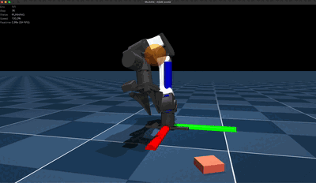
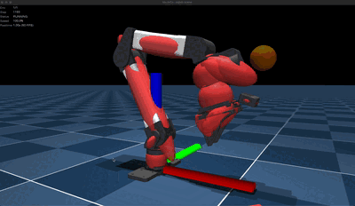

Domain Randomization#
Domain randomization varies physical parameters during training so that policies
are robust to modeling errors and real-world variation. This guide shows
how to attach randomization terms to an environment using EventTermCfg and
the dr module.
Quick Start#
Use an EventTermCfg that calls a typed function from dr with a
value range and an operation describing how to apply the draw.
from mjlab.envs.mdp import dr
from mjlab.managers.event_manager import EventTermCfg
from mjlab.managers.scene_entity_config import SceneEntityCfg
foot_friction: EventTermCfg = EventTermCfg(
mode="reset", # randomize each episode
func=dr.geom_friction,
params={
"asset_cfg": SceneEntityCfg("robot", geom_names=[".*_foot.*"]),
"ranges": (0.3, 1.2),
"operation": "abs",
},
)
Each dr function is decorated with @requires_model_fields which
automatically tracks the fields that need to be expanded for per-world
storage and the RecomputeLevel needed to keep
derived quantities consistent.
The mode parameter controls when the event fires:
"startup"randomizes once at initialization"reset"randomizes at every episode reset"interval"randomizes at regular time intervals
Available Functions#
Model field functions#
Each function writes to a single field on sim.model (the MuJoCo Warp
model). For example, dr.geom_friction writes to sim.model.geom_friction,
dr.body_mass writes to sim.model.body_mass, and so on. Most share the
signature (env, env_ids, ranges, ...), with distribution and
operation controlling sampling and application (see Parameters).
Some functions have a more readable name than the underlying MuJoCo field; in
those cases the raw field name is available as an alias (dr.body_com_offset
and dr.body_ipos are the same function).
Geom fields
Function |
MuJoCo field |
Description |
Notes |
|---|---|---|---|
|
|
Sliding, torsional, and rolling friction coefficients |
Default axis: 0 (tangential only) |
|
|
Position of the geom in the parent body frame |
|
|
|
Orientation of the geom frame |
Accepts roll/pitch/yaw ranges (radians); composes with default |
|
|
Color and transparency (RGBA) |
|
|
|
Geom-specific size parameters (radius, half-lengths, etc.) |
Automatically recomputes |
|
|
Which baked material the geom renders with |
Samples uniformly from |
Body fields
Function |
MuJoCo field |
Description |
Notes |
|---|---|---|---|
|
|
Mass of the body |
Triggers |
|
|
Center of mass position relative to the body frame |
Triggers |
|
|
Position of the body frame in the parent frame |
Triggers |
|
|
Orientation of the body frame |
Accepts roll/pitch/yaw ranges (radians); composes with default;
triggers |
Joint fields
Function |
MuJoCo field |
Description |
Notes |
|---|---|---|---|
|
|
Velocity-proportional damping force (passive) |
|
|
|
Added rotor inertia (models geared transmissions) |
Triggers |
|
|
Dry friction loss in the joint |
|
|
|
Spring stiffness pulling toward the reference position |
|
|
|
Lower and upper joint position limits |
|
|
|
Reference joint position (zero-spring equilibrium) |
Triggers |
Site fields
Function |
MuJoCo field |
Description |
Notes |
|---|---|---|---|
|
|
Position of the site frame in the parent body frame |
|
|
|
Orientation of the site frame |
Accepts roll/pitch/yaw ranges (radians); composes with default |
Camera fields
Function |
MuJoCo field |
Description |
Notes |
|---|---|---|---|
|
|
Vertical field of view (degrees) |
|
|
|
Camera position in the parent body frame |
|
|
|
Camera orientation |
Accepts roll/pitch/yaw ranges (radians); composes with default |
|
|
Focal length and principal point |
Light fields
Function |
MuJoCo field |
Description |
Notes |
|---|---|---|---|
|
|
Light position in the parent body frame |
|
|
|
Light direction vector |
Material fields
Function |
MuJoCo field |
Description |
Notes |
|---|---|---|---|
|
|
Material RGBA color (tints textures) |
|
|
|
Self-illumination multiplier |
Used by MuJoCo Warp RGB rendering |
|
|
Specular reflection strength in |
Scales the MuJoCo Warp RGB specular component |
|
|
Surface shininess in |
Used by MuJoCo Warp RGB rendering |
|
|
Texture repeat in the S/T directions |
Only affects textured materials; values should stay positive |
Contact pair fields
Function |
MuJoCo field |
Description |
Notes |
|---|---|---|---|
|
|
Per-pair friction override |
Default axis: 0 (tangent1, requires |
Tendon fields
Function |
MuJoCo field |
Description |
Notes |
|---|---|---|---|
|
|
Velocity-proportional damping along the tendon |
|
|
|
Spring stiffness along the tendon |
|
|
|
Dry friction loss along the tendon |
|
|
|
Inertia associated with tendon velocity |
Triggers |
Entity-level functions#
The functions above all write to a single sim.model field. The functions
below operate at the mjlab entity level instead, because they touch multiple
model fields at once or modify entity state that doesn’t live on the MuJoCo
model.
Function |
What it does |
|---|---|
|
Physics-consistent joint randomization of |
|
Randomizes stiffness (kp) and damping (kd) together. For
|
|
Randomizes actuator force range ( |
|
Adds a fixed per-joint bias to position readings, simulating encoder
calibration errors. Writes to |
Pseudo-inertia randomization#
dr.pseudo_inertia jointly randomizes body_mass, body_ipos,
body_inertia, and body_iquat while guaranteeing physical consistency
for any perturbation magnitude. Unlike randomizing these fields independently
(which can produce negative masses, imaginary principal moments, or
triangle-inequality violations), pseudo_inertia parameterizes inertia
through the pseudo-inertia matrix \(J \succ 0\) and ensures the result
is always physically valid.
The pseudo-inertia matrix \(J\) is a \(4 \times 4\) symmetric positive-definite matrix that encodes mass, center of mass, and the full rotational inertia tensor in a single object:
where \(m\) is mass (body_mass), \(c\) is the center of mass
(body_ipos), \(d\) is the vector of principal inertia moments
(body_inertia), and \(I\) is the \(3 \times 3\) inertia tensor
at the body-frame origin. The inertia tensor is constructed by rotating the
diagonal principal moments into the body frame and applying the
parallel-axis theorem:
where \(q\) is the body-to-principal-frame quaternion (body_iquat)
and \(R(q)\) is its rotation matrix.
The math follows Rucker & Wensing, “Smooth Parameterization of Rigid-Body Inertia,” IEEE RA-L 2022. \(J\) is factored via Cholesky as \(J = LL^\top\). A perturbation is applied through an upper-triangular matrix \(U\):
which is guaranteed positive definite for any \(U\). The perturbed
inertia tensor is then decomposed back into MuJoCo fields: the inverse
parallel-axis theorem shifts \(I\) back to the COM, and
eigendecomposition extracts the principal moments (body_inertia) and
principal-frame rotation (body_iquat). This is exact for any
perturbation magnitude.
The 10 parameters of \(U\) control different physical effects:
Parameter |
Physical effect |
|---|---|
|
Global mass-density log-scale. Mass and all principal inertia moments scale by \(e^{2\alpha}\). Center of mass is unchanged. |
|
Axis-aligned stretch/compress along x, y, z in the inertia frame.
Use |
|
Shear perturbation in the xy, xz, and yz planes. Redistributes mass asymmetrically; produces off-diagonal inertia contributions. |
|
Shifts the center of mass along x, y, z (body frame). For a pure
|
Example
events = {
# Isotropic mass scaling + small COM variation.
"body_inertia_dr": EventTermCfg(
mode="reset",
func=dr.pseudo_inertia,
params={
"asset_cfg": SceneEntityCfg("robot", body_names=["torso"]),
"alpha_range": (-0.1, 0.1), # ±10% mass/inertia scaling
"t_range": (-0.02, 0.02), # ±2 cm COM shift
},
),
# Anisotropic stretching (x stiffer than y/z).
"body_inertia_aniso_dr": EventTermCfg(
mode="startup",
func=dr.pseudo_inertia,
params={
"asset_cfg": SceneEntityCfg("robot", body_names=[".*"]),
"alpha_range": (-0.2, 0.2),
"d1_range": (-0.1, 0.1),
"d2_range": (-0.3, 0.3),
"d3_range": (-0.3, 0.3),
},
),
}
Safety of Runtime Model Changes#
In C MuJoCo, modifying mjModel fields at runtime can be unsafe: some
changes invalidate internal acceleration structures (BVH) or leave derived
quantities stale. MuJoCo Warp has a different collision pipeline, so many of
these concerns do not apply.
Two architectural differences matter most:
No collision BVH. C MuJoCo builds a static bounding-volume hierarchy (BVH) for midphase collision pruning. Changing
body_pos/body_quatof a static body invalidates that tree. MuJoCo Warp uses NxN or sweep-and-prune broadphase instead, so there is no static tree to invalidate.Local bounding boxes.
geom_aabbin MuJoCo Warp is a local bounding box (center + half-size in the geom frame). The broadphase transforms it to world space every step usinggeom_xpos/geom_xmatfrom forward kinematics. In C MuJoCo, the BVH caches world-space bounds, so any change togeom_pos/geom_quatmakes them stale.
The table below shows which fields are safe to randomize in mjlab and how that compares to C MuJoCo.
Field(s) |
C MuJoCo |
mjlab / MuJoCo Warp |
Why the difference |
|---|---|---|---|
|
Safe with |
Safe with |
No collision BVH to invalidate (see above). Body FK runs for
all bodies regardless of |
|
Safe with |
Safe with |
Same approach. |
|
Unsafe (no |
Safe for geoms on dynamic bodies |
FK recomputes |
|
Unsafe |
Safe (recomputes bounds automatically) |
|
|
Unsafe (internal derived quantities) |
Not randomized (derived) |
Broadphase acceleration data. Only set once during model
loading. Would need recomputation if |
|
Safe |
Safe |
No derived quantities. Contact friction is read directly each step. |
|
Safe with |
Safe with |
Same approach. |
|
Safe |
Safe |
No derived quantities. |
|
Safe with |
Safe with |
Same approach. |
|
Mostly safe ( |
Safe |
MuJoCo Warp does not use the sleep mechanism that makes the zero/non-zero transition special in C MuJoCo. |
|
Safe with |
Safe with |
Contributes to the mass matrix via |
|
Mostly safe ( |
Safe |
mjlab’s |
|
Mostly safe ( |
Safe |
Sites are recomputed via FK. No tracking camera concern in typical RL usage. |
|
Unsafe |
Not applicable / not randomized |
MuJoCo Warp uses BVH only for rendering, not collision. Octree
data ( |
Static-body caveat for geom_pos/geom_quat and
body_pos/body_quat
MuJoCo Warp’s forward kinematics skips geoms that are both
world-welded (body_weldid == 0) and not descended from a mocap
body (body_mocapid[root] == -1). For such geoms,
geom_xpos/geom_xmat are computed once during make_data and
never updated. Changing geom_pos or the parent body_pos would
leave the world-space collision position stale.
In practice this affects only bare <geom> elements placed directly on
the <worldbody> in XML (e.g. a ground plane) that are not part of any
mjlab entity. All mjlab entities (including fixed-base ones) are
auto-wrapped in a mocap body by auto_wrap_fixed_base_mocap, which
makes them exempt from the FK skip. The built-in dr functions target
named bodies/geoms on entities, so they are always safe.
How geom_size recomputation works#
Changing geom_size at runtime requires updating two derived fields that
the broadphase reads every step:
geom_rbound: bounding sphere radius (used for sphere-filter pruning)geom_aabb: local axis-aligned bounding box (used for AABB/OBB pruning)
Both are copied from MjModel during model loading and never recomputed
by MuJoCo Warp. dr.geom_size handles this by recomputing both fields
inline (pure PyTorch, no Warp kernel needed) after writing the new sizes.
The formulas are type-dependent:
Geom type |
|
|
|---|---|---|
Sphere |
|
|
Capsule |
|
|
Cylinder |
|
|
Ellipsoid |
|
|
Box |
|
|
Plane, heightfield, mesh, and SDF geoms are not supported because their bounds
come from vertex data or are infinite, not derivable from geom_size.
pair_friction and isotropic friction#
pair_friction stores five friction coefficients per contact pair:
Index |
Name |
Active when |
Meaning |
|---|---|---|---|
0 |
tangent1 |
|
Sliding friction along the first tangent axis of the contact frame |
1 |
tangent2 |
|
Sliding friction along the second tangent axis |
2 |
spin |
|
Torsional friction around the contact normal |
3 |
roll1 |
|
Rolling friction around the first tangent axis |
4 |
roll2 |
|
Rolling friction around the second tangent axis |
MuJoCo’s standard geom friction is a 3-vector [tangential, torsional,
rolling] that is automatically expanded to the 5-vector by replicating the
tangential coefficient into tangent1 and tangent2, and the rolling coefficient
into roll1 and roll2. For pair overrides the five values are stored
independently, so the symmetry must be maintained explicitly. Pass
isotropic=True to enforce this: after sampling, tangent2 is overwritten
with tangent1, and roll2 is overwritten with roll1 whenever axes 3 or 4 are
targeted.
Recommendations by condim.
condim = 3. Both tangent axes are active. Sample tangent1 and set tangent2 equal to it with isotropic=True. Pass
shared_random=True so that all pairs selected by asset_cfg receive the
same sampled value within each environment (environments still get independent
values from one another):
dr.pair_friction(
env,
env_ids=None,
ranges=(0.4, 1.0),
operation="abs",
asset_cfg=SceneEntityCfg("robot", pair_names=("foot1_floor", "foot2_floor")),
axes=[0], # sample tangent1
shared_random=True, # all pairs selected by asset_cfg share one value per env
isotropic=True, # tangent2 = tangent1
)
condim = 4. Spin (axis 2) is additionally active. Randomize sliding friction as above. If spin should also be randomized, do so in a separate call with its own range:
dr.pair_friction(
env,
env_ids=None,
ranges=(0.4, 1.0),
operation="abs",
asset_cfg=SceneEntityCfg("robot", pair_names=("foot1_floor", "foot2_floor")),
axes=[0],
shared_random=True,
isotropic=True,
)
dr.pair_friction(
env,
env_ids=None,
ranges=(0.003, 0.01),
operation="abs",
asset_cfg=SceneEntityCfg("robot", pair_names=("foot1_floor", "foot2_floor")),
axes=[2],
shared_random=True,
)
condim = 6. All five axes are active. Randomize sliding friction as above.
To also randomize rolling friction symmetrically, target axis 3 with
isotropic=True so that roll2 is set equal to roll1:
dr.pair_friction(
env,
env_ids=None,
ranges=(0.4, 1.0),
operation="abs",
asset_cfg=SceneEntityCfg("robot", pair_names=("foot1_floor", "foot2_floor")),
axes=[0],
shared_random=True,
isotropic=True,
)
dr.pair_friction(
env,
env_ids=None,
ranges=(0.0001, 0.001),
operation="abs",
asset_cfg=SceneEntityCfg("robot", pair_names=("foot1_floor", "foot2_floor")),
axes=[3],
shared_random=True,
isotropic=True, # roll2 = roll1
)
Fields without dr functions#
Added as needed#
These continuous model fields could use a standard dr.* function but
do not have one yet. They will be added as demand arises.
Category |
Field(s) |
Notes |
|---|---|---|
Body |
|
Gravity compensation weight. Needs |
Joint / DOF |
|
Distance threshold for joint-limit detection. |
Tendon |
|
Tendon length limits. |
|
Distance threshold for tendon-limit detection. |
|
|
Spring rest-length range. |
|
Actuator |
|
|
Better as custom code#
These fields have coupled semantics that make a generic dr.* function
more misleading than helpful. For example, solref is interpreted
differently depending on the solver type (elliptic vs. direct), solimp
has ordering constraints (dmin < dmax, width > 0), and qpos_spring is
coupled with qpos0. The right ranges depend on the specific modeling
choices. Write a custom event term instead (see
Custom Class-Based Event Terms or use
@requires_model_fields to handle field expansion automatically).
Category |
Field(s) |
Notes |
|---|---|---|
Solver parameters |
|
Semantics depend on solver type and timestep. |
Contact thresholds |
|
Interact with solver parameters above. |
Pair overrides |
|
Constraint anchor overrides. |
Spring reference |
|
Coupled with |
Requires dedicated API#
These fields need specialized handling because they are integer/categorical, involve vertex data, or lack the per-world dimension needed for independent per-environment values.
Category |
Field(s) |
Notes |
|---|---|---|
Texture-role swapping |
|
Not implemented for now because mujoco’s viewer doesn’t reread
|
Mesh |
|
Shape variation for manipulation objects. These fields lack the per-world dimension, so per-world variation is not possible with the current expand infrastructure. Heterogeneous-world support is in progress. |
Deformable |
|
Deformable body parameters for soft-object manipulation.
Like mesh fields, most |
Not a DR target#
light_active,light_castshadow,light_type,cam_projection: boolean/integer toggles, not continuous parameters.jnt_pos,jnt_axis: structural joint geometry; changing at runtime is fragile and not a standard use case.hfield_data,hfield_size: terrain data; use the terrain system instead.
Parameters#
The model field functions share three parameters that control randomization:
distribution controls how values are sampled from ranges, and
operation controls how those sampled values are applied to the model field.
(Entity-level functions like dr.pseudo_inertia and dr.pd_gains have
their own signatures; see their docstrings for details.)
Distribution#
The distribution parameter controls how random values are sampled from
the provided ranges. It accepts a built-in string or a
dr.Distribution instance for custom sampling logic.
Value |
Behavior |
|---|---|
|
Samples uniformly between |
|
Samples in log space, useful for parameters that span orders of magnitude (e.g. torsional friction). Both range values must be > 0. |
|
|
To define a custom distribution, create a dr.Distribution instance. The
sample callable receives (lower, upper, shape, device) and returns a
tensor. For example, a truncated normal that clamps samples to the given
bounds:
import torch
from mjlab.envs.mdp import dr
truncated_normal = dr.Distribution(
name="truncated_normal",
sample=lambda lo, hi, shape, device: torch.clamp(
torch.normal(
mean=(lo + hi) / 2,
std=(hi - lo) / 4, # 95% of samples within bounds
).expand(shape),
min=lo,
max=hi,
),
)
params={"distribution": truncated_normal, "ranges": (0.3, 1.2)}
Operation#
The operation parameter controls how the sampled value is applied to the
model field. It accepts a built-in string or a dr.Operation instance
for custom logic.
Value |
Behavior |
|---|---|
|
Sets the field to the sampled value directly |
|
Multiplies the original default value by the sampled value |
|
Adds the sampled value to the original default value |
For "scale" and "add", the DR engine always applies the random draw to
the original default values captured from the compiled MjModel on CPU,
not the current values. This prevents accumulation: scaling friction by 2x
three times in a row gives 2x the original, not 8x.
To define a custom operation, create a dr.Operation instance. The four
fields are:
name: a human-readable label for error messages.initialize: creates the result tensor that gets filled axis by axis with sampled values. For example,scalestarts from ones so that unsampled axes multiply by 1 (no change), whileaddstarts from zeros.combine: takes(base_values, random_values)and returns the final tensor written into the model field. For example,scalereturnsbase * randomandaddreturnsbase + random.uses_defaults: whenTrue, the base values are the compile-time defaults (preventing accumulation across repeated calls). WhenFalse, the base values are the current model values.
As an example, the built-in add always adds to the default values, so
repeated calls reset rather than drift. A custom drift operation that
adds to the current values is useful for mode="interval" events where
parameters should slowly wander over time:
import torch
from mjlab.envs.mdp import dr
drift = dr.Operation(
name="drift",
initialize=torch.zeros_like,
combine=torch.add,
uses_defaults=False, # read current values, not defaults
)
# Friction slowly wanders each interval step.
friction_drift: EventTermCfg = EventTermCfg(
mode="interval",
interval_range_s=(0.5, 1.0),
func=dr.geom_friction,
params={
"asset_cfg": SceneEntityCfg("robot", geom_names=[".*_foot.*"]),
"ranges": (-0.01, 0.01),
"operation": drift,
},
)
Axis selection#
Many model fields are multi-dimensional. For example, geom_friction has
three components [tangential, torsional, rolling] and body_pos has
three spatial axes [x, y, z]. Specific axes can be targeted using the
axes parameter or by passing a dict for ranges.
For geom_friction with condim=3 (standard frictional contact), only
axis 0 (tangential) affects contact behavior. See the MuJoCo contact
documentation
for details on condim and friction coefficients.
# Tangential friction only (this is the default for geom_friction)
params={"ranges": {0: (0.3, 1.2)}}
# Tangential + torsional (torsional matters for condim >= 4)
params={"ranges": {0: (0.5, 1.0), 1: (0.001, 0.01)}}
# X and Y position with the same range
params={"axes": [0, 1], "ranges": (-0.1, 0.1)}
Per-component string-keyed ranges#
Different ranges can be applied to different entities in a single call using regex patterns as dict keys:
dr.joint_damping(
env, env_ids,
ranges={".*knee.*": (0.5, 1.5), ".*hip.*": (0.8, 1.2)},
operation="scale",
asset_cfg=SceneEntityCfg("robot", joint_names=[".*"]),
)
Each pattern is matched against the entity names (joint names, geom names, etc.) and the corresponding range is applied to the matching components. In this example, knee joints get their damping scaled by 0.5x to 1.5x while hip joints get a tighter 0.8x to 1.2x range, all in a single event term.
Examples#
Friction (reset)#
foot_friction: EventTermCfg = EventTermCfg(
mode="reset",
func=dr.geom_friction,
params={
"asset_cfg": SceneEntityCfg("robot", geom_names=[".*_foot.*"]),
"ranges": (0.3, 1.2),
"operation": "abs",
},
)
Note
Give the robot’s collision geoms higher priority than terrain (geom priority defaults to 0). Then only robot friction. MuJoCo will use the higher-priority geom’s friction in (robot, terrain) contacts.
from mjlab.utils.spec_config import CollisionCfg
robot_collision = CollisionCfg(
geom_names_expr=[".*_foot.*"],
priority=1,
friction=(0.6,),
condim=3,
)
Joint Offset (startup)#
Randomize default joint positions to simulate joint offset calibration errors:
joint_offset: EventTermCfg = EventTermCfg(
mode="startup",
func=dr.joint_default_pos,
params={
"asset_cfg": SceneEntityCfg("robot", joint_names=[".*"]),
"ranges": (-0.01, 0.01),
"operation": "add",
},
)
Center of Mass (COM) (startup)#
com: EventTermCfg = EventTermCfg(
mode="startup",
func=dr.body_com_offset,
params={
"asset_cfg": SceneEntityCfg("robot", body_names=["torso"]),
"ranges": {0: (-0.02, 0.02), 1: (-0.02, 0.02)},
"operation": "add",
},
)
Common Pitfalls#
dr.body_mass does not scale inertia#
Scaling mass without scaling inertia is only physically correct when modelling
a point mass added at the COM (which contributes zero rotational inertia).
For the common DR use case, simulating manufacturing variation or uncertainty
in link density, mass and inertia should scale together. Use
dr.pseudo_inertia() with alpha_range instead:
# Wrong: mass changes, inertia stays fixed (physically inconsistent).
EventTermCfg(func=dr.body_mass, params={"ranges": (0.8, 1.2)})
# Correct: mass and inertia both scale by e^{2alpha} (uniform density change).
EventTermCfg(func=dr.pseudo_inertia, params={"alpha_range": (-0.1, 0.1)})
dr.body_mass emits a UserWarning at runtime to flag this.
*_quat ranges are in radians, not degrees#
All quaternion randomization functions (dr.geom_quat(),
dr.body_quat(), dr.site_quat(), dr.cam_quat()) accept
roll/pitch/yaw ranges in radians. Passing degree values silently produces
rotations roughly 57x larger than intended. There is no runtime check.
*_quat perturbations are relative to the default, not the current value#
The sampled RPY perturbation is composed with the default quaternion, not
the current one. This is consistent with the no-accumulation guarantee of all
other dr functions, but it means repeated calls do not stack rotations.
Each call independently samples a new perturbation from the default orientation.
dr.geom_friction only randomizes tangential friction by default#
The default axis is 0 (tangential friction). Axes 1 (torsional) and 2
(rolling) only affect contacts with condim >= 4, so the default is correct
for standard condim=3 contacts. If the model uses high-dimensional
contacts, pass axes=[0, 1, 2] explicitly.
dr.geom_size raises on non-primitive geoms#
dr.geom_size() only supports primitive geom types (sphere, capsule,
ellipsoid, cylinder, box) because broadphase bounds for mesh, plane, and
heightfield geoms cannot be recomputed analytically. Selecting a non-primitive
geom raises a ValueError. Filter the SceneEntityCfg to primitive geoms
only:
# Select only primitive geoms by name pattern.
geom_cfg = SceneEntityCfg("robot", geom_names=(".*sphere.*", ".*box.*"))
How It Works Under the Hood#
Understanding the internals helps when writing custom DR terms or debugging unexpected behavior.
Per-world storage#
MuJoCo Warp batches thousands of worlds into a single simulation. To save
memory, model arrays like geom_friction are stored once with shape
(1, ngeom, 3) and a stride of 0 along the first (world) dimension.
GPU kernels index into these arrays with worldid % arr.shape[0]. When
shape[0] is 1, every world reads the same row, so they all share identical
model parameters.
On the PyTorch side, mjlab wraps these stride-0 arrays using torch.expand
so they appear to have shape (num_envs, ngeom, 3) while still backed by a
single row of memory. Indexing with tensor[env_id] makes it look like
each world has its own data, but writes to any world affect all of them because
they all point to the same underlying memory.
To give each world independent values, the underlying Warp array is
expanded from shape (1, N) to (num_worlds, N) with real
per-world memory and normal strides. sim.expand_model_fields()
allocates a new array, copies the shared data into each world’s row, and
replaces the old array on the model. After expansion, writes to one world no
longer affect others and each world can have its own friction, mass, or
damping values.
Each dr function declares which fields it needs via the
@requires_model_fields decorator, and the EventManager collects these
at startup so expansion happens automatically. Custom DR terms that directly
modify model arrays must ensure those arrays have been expanded. Either
decorate the function with @requires_model_fields or call
sim.expand_model_fields() manually.
Note
Expanding a field allocates new GPU memory and invalidates any captured CUDA graph because the graph holds pointers to the old arrays. mjlab recreates the graph automatically after expansion. This is a one-time cost at environment startup, not per-episode.
Why not just recompile the model?#
The cleanest way to get per-world variation would be to modify the MjSpec
for each world, compile each one into its own MjModel, and transfer them all
to the GPU. That would give perfectly consistent derived quantities for free
because mj_setConst runs during compilation.
mjlab does not do this for two reasons:
Cost. Compiling an
MjSpecis a CPU operation. Doing it once per world on every episode reset would be far too slow for thousands of environments.Architecture. MuJoCo Warp expects a single
Modelshared across all worlds. There is no mechanism to load N independent models into one simulation.
Instead, mjlab modifies the expanded arrays in place on the GPU and selectively
recompute only the derived quantities that depend on what changed. This is
what the RecomputeLevel system handles.
Recomputation of derived fields#
Some model fields are derived from others. For example,
body_subtreemass (the total mass of a body and all its descendants) depends
on body_mass. Changing body_mass without updating
body_subtreemass, the constraint solver will use stale impedance values
and the simulation will be subtly wrong.
In C MuJoCo, the solution is to call mj_setConst
after modifying model parameters at runtime. MuJoCo Warp provides an equivalent
set of functions (set_const, set_const_0, set_const_fixed) that run
on the GPU and operate on all worlds in parallel. mjlab calls these
automatically.
The three recomputation levels, from cheapest to most expensive:
Level |
What it recomputes |
When to use |
|---|---|---|
|
|
After changing |
|
|
After changing |
|
Everything above |
After changing |
The built-in dr functions already declare the correct level. When the
EventManager fires multiple DR terms in a single apply() call, it
tracks the strongest level among them and calls sim.recompute_constants()
once at the end. Manual calls are unnecessary unless writing
custom DR logic.
Fields that only affect contact or joint behavior directly (geom_friction,
dof_damping, dof_frictionloss, etc.) have no derived quantities and
need no recomputation.
Note
mjlab captures sim.step(), sim.forward(), sim.reset(), and
sim.sense() as individual CUDA graphs for performance. All event
manager logic, including recompute_constants, runs as regular
Python between these graph replays, so it will not break graph capture.
That said, set_const is expensive: it runs forward kinematics, the
composite rigid body algorithm, and mass matrix factorization across all
worlds. Calling it every step via an interval event would add
significant overhead. In practice, fields that need recomputation
(body_mass, body_com_offset, joint_armature, etc.) are best
randomized with startup or reset modes. Fields that need no
recomputation (geom_friction, dof_damping, etc.) are cheap to
randomize at any frequency.
Custom Class-Based Event Terms#
Custom event terms can also use classes instead of functions. This is useful for event terms that need to maintain state or perform initialization logic:
class RandomizeTerrainFriction:
"""Custom event term that randomizes terrain friction."""
def __init__(self, cfg, env):
# Find the terrain geom index during initialization
self._terrain_idx = None
for idx, geom in enumerate(env.scene.spec.geoms):
if geom.name == "terrain":
self._terrain_idx = idx
if self._terrain_idx is None:
raise ValueError("Terrain geom not found in the model.")
def __call__(self, env, env_ids, ranges):
"""Called each time the event is triggered."""
from mjlab.utils.math import sample_uniform
env.sim.model.geom_friction[env_ids, self._terrain_idx, 0] = (
sample_uniform(ranges[0], ranges[1], len(env_ids), env.device)
)
# Register in the environment config.
terrain_friction: EventTermCfg = EventTermCfg(
mode="reset",
func=RandomizeTerrainFriction,
params={"ranges": (0.3, 1.2)},
)
Visualizing DR Changes#
Both viewers reflect DR changes, but with different coverage.
Native viewer
The native viewer syncs per-world model fields from the GPU to a local
MjModel before each render. All of MuJoCo’s built-in visualization
toggles then work correctly against the randomized model:
Geom appearance (
geom_rgba,geom_size,geom_pos,geom_quat,geom_matid)Material appearance (
mat_rgba,mat_emission,mat_specular,mat_shininess,mat_texrepeat)Body and site poses (
body_pos,body_quat,body_ipos,site_pos,site_quat)Inertia (
body_inertia,body_iquat,body_mass): pressIto toggle inertia boxesCamera parameters (
cam_pos,cam_quat,cam_fovy,cam_intrinsic): pressQto toggle camera frustumsLights (
light_pos,light_dir)

Cube color (dr.geom_rgba), cube size (dr.geom_size), and
link 2/3 orientations (dr.body_quat) randomized each episode
reset. Broadphase bounds are recomputed automatically after size
changes.

dr.pseudo_inertia with alpha_range=(-0.5, 0.5) on links 2
and 3. The inertia ellipsoids resize each episode reset while other
links remain unchanged.
Note
cam_fovy has no effect on cameras that use intrinsic parameters
(sensorsize / focal set in XML). This applies to both rendered
images and the frustum visualization. MuJoCo computes the projection
from cam_intrinsic and cam_sensorsize instead. Use
dr.cam_intrinsic to randomize the field of view for such cameras.
See the MuJoCo camera documentation
for details on how intrinsic parameters interact with fovy.
Viser
Camera frustums and body poses are always current because viser reads
world-space positions directly from GPU simulation data (cam_xpos,
body_xpos) every frame.
Note
geom_rgba and geom_size DR are not reflected in viser. Geom
colors and sizes are baked into the scene’s GLB meshes at construction
time. The underlying viser API (add_batched_meshes_simple) supports
per-instance color updates via batched_colors, but this requires
routing color-only geoms through a different handle type than the current
add_batched_meshes_trimesh path. Deferred for a future update.
Migrating from Isaac Lab#
Isaac Lab exposes explicit friction combination modes (multiply, average,
min, max). MuJoCo instead uses priority-based selection: if one
contacting geom has higher priority, its friction is used. Otherwise the
element-wise maximum is used. See the
MuJoCo contact documentation
for details.